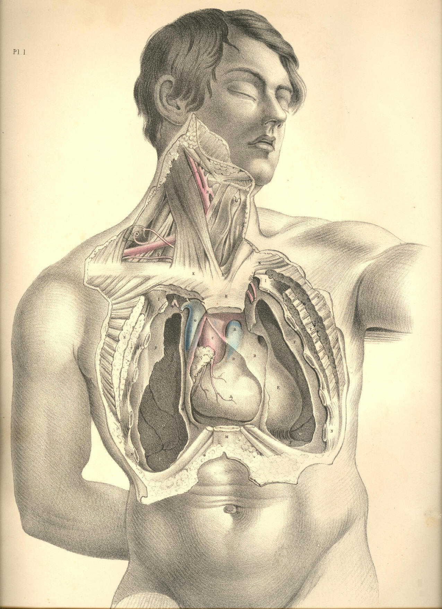

COMMENTARY ON PLATES 1 & 2.
THE FORM OF THE THORACIC CAVITY, AND THE POSITION OF THE LUNGS,
HEART, AND LARGER BLOODVESSELS.
In the human body there does not exist any such space as cavity,
properly so called. Every space is occupied by its contents. The
thoracic space is completely filled by its viscera, which, in mass, take
a perfect cast or model of its interior. The thoracic viscera lie so
closely to one another, that they respectively influence the form and
dimensions of each other. That space which the lungs do not occupy is
filled by the heart, &c., and vice
versa. The thoracic apparatus
causes
no vacuum by the acts of either contraction or dilatation. Neither do
the lungs or the heart. When any organ, by its process of growth, or by
its own functional act, forces a space for itself, it immediately
inhabits that space entirely at the expense of neighbouring organs. When
the heart dilates, the pulmonary space contracts; and when the thoracic
space increases, general space diminishes in the same ratio.
The mechanism of the functions of respiration and circulation consists,
during the life of the animal, in a constant oscillatory nisus to
produce a vacuum which it never establishes. These vital forces of the
respiratory and circulatory organs, so characteristic of the higher
classes of animals, are opposed to the general forces of surrounding
nature. The former vainly strive to make exception to the irrevocable
law, that "nature abhors a vacuum."
This act of opposition between both
forces constitutes the respiratory act, and thus the respiratory
thoracic being (like a vibrating pendulum) manifests respiratory motion,
not as an effort of volition originating solely with itself, but
according to the measure of the force of either law; as entity is
relationary, so is functionality likewise. The being is functional by
relationship; and just as a pendulum is functional, by reason of the
counteraction of two opposing forces,--viz., the force of motion and the
force of gravity,--so is a thoracic cavity (considering it as a
mechanical apparatus) functional by two opposing forces--the vital force
and the surrounding physical force. The inspiration of thoracic space is
the expiration of general space, and reciprocally.
The thoracic space is a symmetrical enclosure originally, which
aftercoming necessities modify and distort in some degree. The spaces
occupied by the opposite lungs in the adult body do not exactly
correspond as to capacity, O O, Plate 1. Neither is the cardiac space, A
E G D, Plate 1, which is traversed by the common median line,
symmetrical. The asymmetry of the lungs is mainly owing to the form and
position of the heart; for this organ inclines towards the left thoracic
side. The left lung is less in capacity than the right, by so much space
as the heart occupies in the left pulmonary side. The general form of
the thorax is that of a cone, I I N N, Plate 1, bicleft through its
perpendicular axis, H M. The line of bicleavage is exactly median, and
passes through the centre of the sternum in front, and the centres of
the dorsal vertebral behind. Between the dorsal vertebral and the
sternum, the line of median cleavage is maintained and sketched out in
membrane. This membranous middle is formed by the adjacent sides of the
opposite pleural or enveloping bags in which the lungs are enclosed. The
heart, A, Plate 1, is developed between these two pleural sacs, F F, and
separates them from each other to a distance corresponding to its own
size. The adjacent sides of the two pleural sacs are central to the
thorax, and form that space which is called mediastinum; the heart is
located in this mediastinum, U E, Plate 1. The extent of the thoracic
region ranges perpendicularly
from the root of the neck, Q, Plate 1, to
the roof of the abdomen--viz., the diaphragm, P, transversely from the
ribs of one side, I N, Plate 1, to those of the other, and
antero-posteriorly from the
sternum, H M, to the vertebral column. All
this space is pulmonary, except the cardiac or median space, which, in
addition to the heart, A, Plate 1, and great bloodvessels, G C B,
contains the oesophagus, bronchi, &c. The ribs are the true
enclosures
of thoracic space, and, generally, in mammalian forms, they fail or
degenerate at that region of the trunk which is not pulmonary or
respiratory. In human anatomy, a teleological reason is given for
this--namely, that of the ribs being mechanically subservient to the
function of respiration alone. But the transcendental anatomists
interpret this fact otherwise, and refer it to the operation of a higher
law of formation.
The capacity of the thorax is influenced by the capacity of the abdomen
and its contents. In order to admit of full inspiration and pulmonary
expansion, the abdominal viscera recede in the same ratio as the lungs
dilate. The diaphragm, P P, Plate 1, or transverse musculo-membranous
partition which divides the pulmonary and alimentary cavities, is, by
virtue of its situation, as mechanically subservient to the abdomen as
to the thorax. And under general notice, it will appear that even the
abdominal muscles are as directly related to the respiratory act as
those of the thorax. The connexion between functions is as intimate and
indissoluble as the connexion between organs in the same body. There can
be no more striking proof of the divinity of design than by such
revelations as anatomical science everywhere manifests in facts such as
this--viz., that each organ serves in most cases a double, and in many a
triple purpose, in the animal economy.
The apex of the lung projects into the root of the neck, even to a
higher level, Q, Plate 1, than that occupied by the sternal end of the
clavicle, K. If the point of a sword were pushed through the neck above
the clavicle, at K, Plate 1, it would penetrate the apex of the right
lung, where the subclavian artery, Q, Plate 1, arches over it. In
connexion with this fact, I may mention it as very probable that the
bruit, or continuous murmur
which we hear through the stethoscope, in
chlorotic females, is caused by the pulsation of the subclavian artery
against the top of the lung. The stays or girdle which braces the loins
of most women prevents the expansion of the thoracic apparatus,
naturally attained by the descent of the diaphragm; and hence, no doubt,
the lung will distend inordinately above towards the neck. It is an
interesting fact for those anatomists who study the higher
generalizations of their science, that at those very localities--viz.,
the neck and loins, where the lungs by their own natural effort are
prone to extend themselves in forced inspiration--happen the "anomalous"
creations of cervical and lumbar ribs. The subclavian artery is
occasionally complicated by the presence of these costal appendages.
If the body be transfixed through any one of the intercostal spaces, the
instrument will surely wound some part of the lung. If the thorax be
pierced from any point whatever, provided the instrument be directed
towards a common centre, A, Plate 1, the lung will suffer lesion; for
the heart is, almost completely, in the healthy living body, enveloped
in the lungs. So true is it that all the costal region (the asternal as
well as the sternal) is a pulmonary enclosure, that any instrument which
pierces intercostal space must wound the lung.
As the sternal ribs degenerate into the "false" asternal or incomplete
ribs from before, obliquely backward down to the last dorsal vertebra,
so the thoracic space takes form. The lungs range through a much larger
space, therefore, posteriorly than they do anteriorly.
The form of the thorax, in relation to that of the abdomen, may be
learned from the fact that a gunshot, which shall enter a little below
N, Plate 1, and, after traversing the body transversely, shall pass out
at a corresponding point at the opposite side, would open the thorax and
the abdomen into a common cavity; for it would pierce the thorax at N,
the arching diaphragm at the level of M, and thereat enter the belly;
then it would enter the thorax again at P, and make exit below N,
opposite. If a cutting instrument were passed horizontally from before
backward, a little below M, it would first open the abdomen, then pierce
the arching diaphragm, and pass into the thorax, opposite the ninth or
eighth dorsal vertebra.
The outward form or superficies masks in some degree the form of the
interior. The width of the thorax above does not exceed the diameter
between the points I I, of Plate 1, or the points W W, of Plate 2. If we
make percussion directly from before backwards at any place external to
I, Plate 1, we do not render the lung vibrative. The diameters between I
I and N N, Plate 1, are not equal; and these measures will indicate the
form of the thorax in the living body, between the shoulders above and
the loins below.
The position of the heart in the thorax varies somewhat with several
bodies. The size of the heart, even in a state of perfect health, varies
also in subjects of corresponding ages, a condition which is often
mistaken for pathological. For the most part, its form occupies a space
ranging from two or three lines right of the right side of the sternum
to the middle of the shafts of the fifth and sixth ribs of the left
side. In general, the length of the osseous sternum gives the exact
perpendicular range of the heart, together with its great vessels.
The aorta, C, Plates 1 and 2, is behind the upper half of the sternum,
from which it is separated by the pericardium, D, Plate 1, the thin edge
of the lung, and the mediastinal pleurae, U E, Plate 1, &c. If the
heart
be injected from the abdominal aorta, the aortal arch will flatten
against the sternum. Pulmonary space would not be opened by a
penetrating instrument passed into the root of the neck in the median
line above the sternum, at L, Plate 1. But the apices of both lungs
would be wounded if the same instrument entered deeply on either side of
this median line at K K. An instrument which would pierce the sternum
opposite the insertion of the second, third, or fourth costal cartilage,
from H downwards, would transfix some part of the arch of the aorta, C,
Plate 1. The same instrument, if pushed horizontally backward through
the second, third, or fourth interspaces of the costal cartilages close
to the sternum, would wound, on the right of the sternal line, the vena
cava superior, G, Plate 1; on the left, the pulmonary artery, B, and
the descending thoracic aorta. In the healthy living body, the thoracic
sounds heard in percussion, or by means of the stethoscope, will vary
according to the locality operated upon, in consequence of the variable
thickness of those structures (muscular and osseous, &c.,) which
invest
the thoracic walls. Uniformity of sound must, owing to these facts, be
as materially interrupted, as it certainly is, in consequence of the
variable contents of the cavity. The variability of the healthy thoracic
sounds will, therefore, be too often likely to be mistaken for that of
disease, if we forget to admit these facts, as instanced in the former
state. Considering the form of the thoracic space in reference to the
general form of the trunk of the living body, I see reason to doubt
whether the practitioner can by any boasted delicacy of manipulation,
detect an abnormal state of the pulmonary organs by percussion, or the
use of the stethoscope, applied at those regions which he terms
coracoid, scapulary, subclavian, &c., if the line of his
examination be
directed from before backwards. The scapula, covered by thick carneous
masses, does not lie in the living body directly upon the
osseous-thorax, neither does the clavicle. As all antero-posterior
examination in reference to the lungs external to the points, I I,
between the shoulders cannot, in fact, concern the pulmonary organs, so
it cannot be diagnostic of their state either in health or disease. The
difficulties which oppose the practitioner's examination of the state of
the thoracic contents are already numerous enough, independent of those
which may arise from unanatomical investigation.
DESCRIPTION OF PLATES 1 & 2.
PLATE 1.
A. Right ventricle of the heart.
B. Origin of pulmonary artery.
C. Commencement of the systemic aorta, ascending part of
aortic arch.
D. Pericardium investing the heart and the origins of the
great
bloodvessels.
E. Mediastinal pleura, forming a second investment for the
heart,
bloodvessels, &c.
F. Costal pleura, seen to be continuous above with that
which forms
the mediastinum.
G. Vena cava superior, entering pericardium to join V, the
right
auricle.
H. Upper third of sternum.
I I. First ribs.
K K. Sternal ends of the clavicles.
L. Upper end of sternum.
M. Lower end of sternum.
N N. Fifth ribs.
O O. Collapsed lungs.
P P. Arching diaphragm.
Q. Subclavian artery.
R. Common carotid artery, at its division into internal and
external
carotids.
S S. Great pectoral muscles.
T T. Lesser pectoral muscles.
U. Mediastinal pleura of right side.
V. Right auricle of the heart.

Plate 1
PLATE 2.
A. Right ventricle of the heart. A a. Pericardium.
B. Pulmonary artery. B b. Pericardium.
C. Ascending aorta. C c. Transverse aorta.
D. Right auricle.
E. Ductus arteriosus in the loop of left vagus nerve, and close to
phrenic nerve of left side.
F. Superior vena cava.
G. Brachio-cephalic vein of left side.
H. Left common carotid artery.
I. Left subclavian vein.
K. Lower end of left internal jugular vein.
L. Right internal jugular vein.
M. Right subclavian vein.
N. Innominate artery--brachio-cephalic.
O. Left subclavian artery crossed by left vagus nerve.
P. Right subclavian artery crossed by right vagus nerve, whose inferior
laryngeal branch loops under the vessel.
Q. Right common carotid artery
R. Trachea.
S. Thyroid body.
T. Brachial plexus of nerves.
U. Upper end of left internal jugular vein.
V V. Clavicles cut across and displaced downwards.
W W. The first ribs.
X X. Fifth ribs cut across.
Y Y. Right and left mammae.
Z. Lower end of sternum.
Plate 2
COMMENTARY ON PLATES 3
& 4